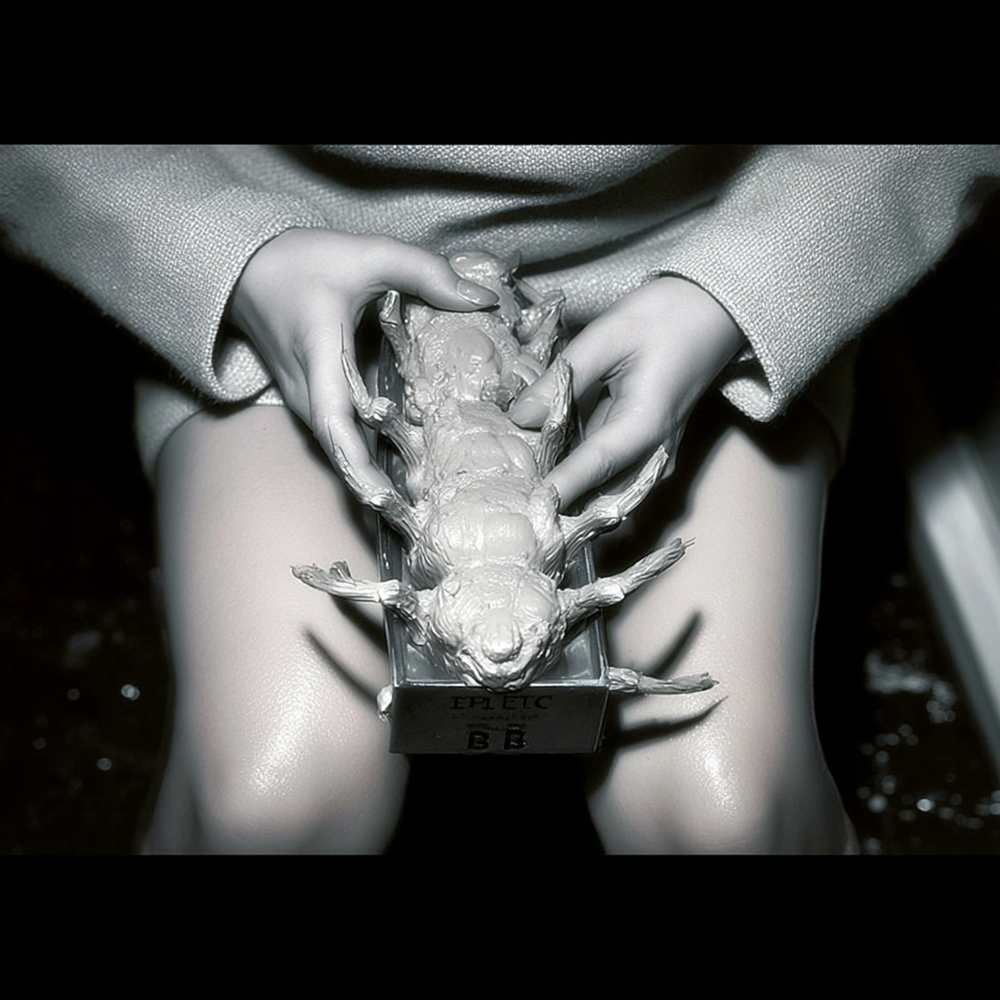

<!-- ... шапка и навигация без изменений ... -->

<main class="container">

  <section id="intro">
    <h2>Введение / Manifesto 💗</h2>

    <!-- было w40 — стало w32 -->
    <figure class="float-right shape-circle w32">
      
      <figcaption>«мягкая» аура: attention as milieu</figcaption>
    </figure>

    <p>...текст...</p>

    <!-- просто оставляем инлайн-стили, но уменьшаем тоже до 32% при желании -->
    
    <p>...текст...</p>
    <div class="clear"></div>
  </section>

  <!-- ЖИВАЯ КАРТА: теперь широкая и full-bleed -->
</main>

<div class="fullbleed">
  <div class="signal-map signal-wide" aria-label="Live signal map">
    
    <!-- кликабельные узлы; координаты можно оставить прежние -->
    <a class="hot" style="left:75%; top:28%;" href="#characters" title="Characters"></a>
    <a class="hot" style="left:70%; top:82%;" href="#research"   title="Users / Research"></a>
    <a class="hot" style="left:10%; top:32%;" href="#lab"        title="Algorithms / Methods"></a>
    <a class="hot" style="left:12%; top:82%;" href="#intro"      title="Trust / Manifesto"></a>
    <a class="hot" style="left:50%; top:52%;" href="#archive"    title="Archive / Fieldwork"></a>
  </div>
</div>

<main class="container">
  <!-- дальше остальные секции; в фигурах также меняем w40 → w32 -->
  <section id="research">
    <h2>Research Notes 🫧</h2>
    <figure class="float-left shape-soft w32">
      
      <figcaption>луп / повтор как учебная кривая</figcaption>
    </figure>
    <p>...текст...</p>
    <div class="clear"></div>
  </section>

  <section id="characters">
    <h2>Characters / Decoy Types 👧</h2>
    <figure class="float-right shape-circle w32">
      
    </figure>
    <p>...текст...</p>
    <div class="clear"></div>
  </section>

  <section id="archive">
    <h2>Fieldwork / Archive 🗂️</h2>
    <figure class="float-left shape-soft w32">
      
      <figcaption>атлас интерфейсов и метрик</figcaption>
    </figure>
    <p>...текст...</p>
    <div class="clear"></div>
  </section>

  <section id="lab">
    <h2>Lab / Methods 🧪</h2>
    <figure class="float-right shape-circle w32">
      
    </figure>
    <p>...текст...</p>
    <div class="clear"></div>
  </section>

  <!-- reading/links как было -->
</main>

<footer class="site-footer">
  <p>© GIRLSTACK LAB — CC BY‑SA</p>
</footer>

<!-- ASCII‑попапы: скрипт -->
<script>
(() => {
  // Небольшой троттлинг, чтобы не спамить
  let last = 0, active = 0, MAX_ACTIVE = 3;

  const girls = [
`(\\_/)
( •_•)  ♡
/>💗  `,
`✿  (＾▽＾)
  /)  /)
  /  / `,
`☆彡(ノ^_^)ノ
   ︵  ┻━┻`,
`(｡•̀ᴗ-)✧
  ⌒☆`
  ];

  const mona = [
` _  _  _ 
| || || |
| || || |
| \\_/| |
 \\___/  `,
`  ____ 
 / __ \\
| |  | |
| |  | |
| |__| |
 \\____/ `
  ];

  const pool = girls.concat(mona);

  function spawn(x, y){
    if(active >= MAX_ACTIVE) return;
    active++;

    const el = document.createElement('pre');
    el.className = 'ascii-pop';
    el.textContent = pool[(Math.random()*pool.length)|0];

    const size = 10 + Math.floor(Math.random()*6); // 10–16px
    el.style.fontSize = size + 'px';
    el.style.left = x + 'px';
    el.style.top  = y + 'px';
    // случайный цветовой оттенок
    if(Math.random() < 0.5) el.style.color = '#ff66c4';
    else el.style.color = '#8a7cff';

    document.body.appendChild(el);
    setTimeout(() => { el.remove(); active--; }, 1650);
  }

  window.addEventListener('mousemove', (e) => {
    const now = performance.now();
    if (now - last < 90) return; // лёгкий троттлинг
    last = now;
    // небольшая вероятность появления
    if (Math.random() < 0.06) {
      spawn(e.clientX + (Math.random()*30-15), e.clientY + (Math.random()*20-10));
    }
  }, { passive: true });
})();
</script>
